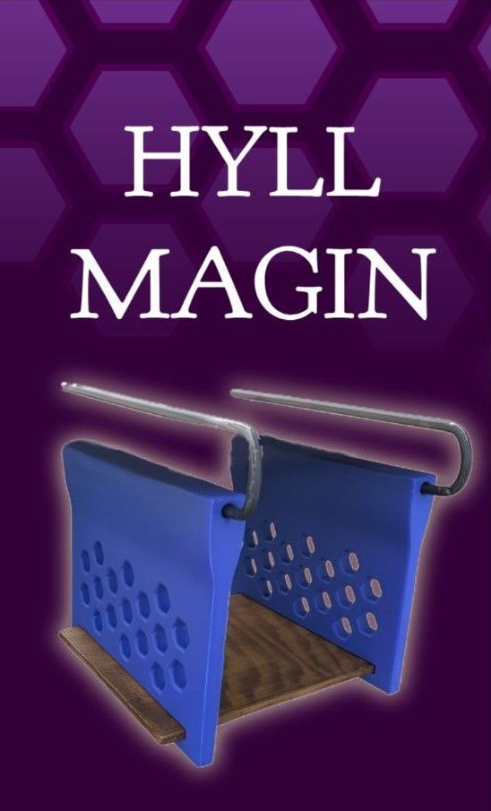
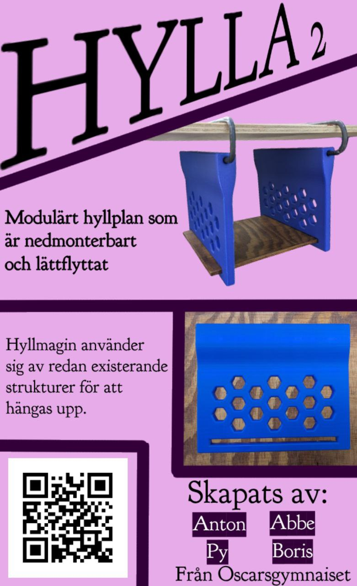
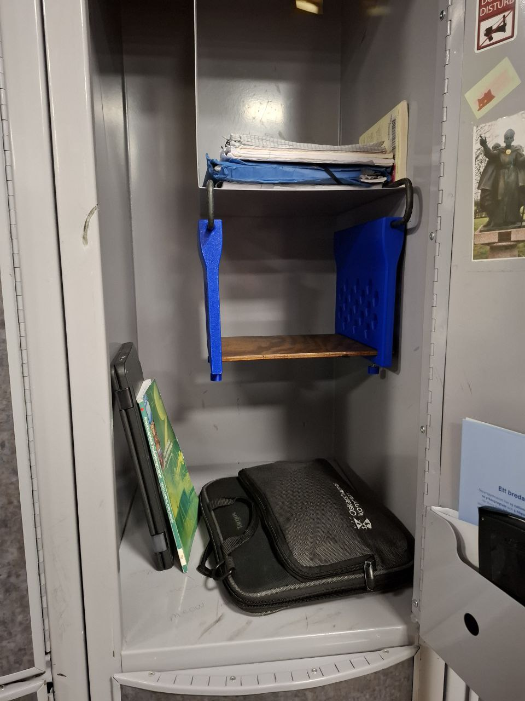

Utvidgar trånga skåps utrymmen och ger hyllplats, utan att behöva förändra skåpets inre struktur. Inte bara bra för skåp, utan även skrivbord och hyllor i exempelvis kontorsmiljöer.
Har du någonsin viljat ha mer utrymme utan att behöva borra i vägen och hitta en perfekt hängande hylla som passar för just dig? Frukta inte, Hyllmagin är här!
Denna produkt har mycket utvecklingspotential, lite som denna sidan. Allt från extra hyllplan till andra monteringsmetoder, det finns massvis med saker att vidareutveckla!